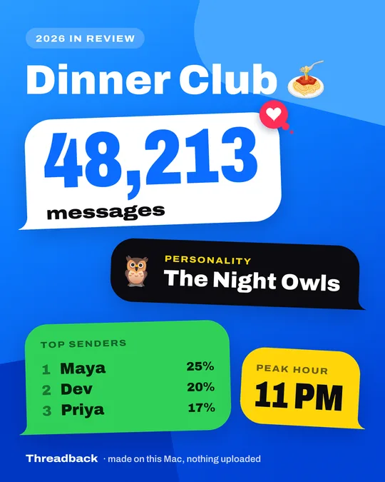

The group chat had a year.
Who carried it. Who was up at 3 AM. The message that got every tapback. Someone types /wrapped in the group chat, and the whole chat taps through the same story.
Free. No sign-up, nothing uploaded. Works with iMessage group chats.
Get it for your group chat
Type /wrapped. A Mac answers.
Maya types: /wrapped

🧵 Dinner Club 🍝 — 2026 in review💬 48,213 messages · 301 active days · 87-day streak🦉 You are The Night Owls — peak hour 11 PM🥇 Maya 25% · 🥈 Dev 20% · 🥉 Priya 17%
- 1
Turn it on, once
One person installs the free Mac app and switches it on for the chat. A few clicks, no typing.
- 2
Anyone types /wrapped
From any phone in the chat. The counting happens on the Mac.
- 3
Everyone taps through
The reply is a card, a short summary and a link to the full story, which opens on any phone.
Needs one person with a Mac (macOS 14 or later) signed in to Messages. The app is free and not signed through Apple’s paid developer program, so macOS asks you to confirm it once, the first time it opens. The Mac page walks you through that.
No Mac, or rather not install anything?
Make a recap in the browser: add your Messages history from a Mac or an iPhone backup, pick the chat, and send the link it gives you. Nothing is installed or uploaded.
Where your messages go: nowhere
-
There is no server
This site is a folder of static files. Your message history is read on your own device and never uploaded, because there is nothing to upload it to.
-
The link is the recap
The stats are compressed into the part of the link after the
#. Browsers never send that part to any website, this one included. -
What a link contains
Counts and the names in your chat. The text of up to three most-reacted messages is included only if the person making the recap switches that on. Anyone holding the link can read it, so share it like a screenshot.
-
The Mac app
It reads and counts on your Mac and uploads nothing. Replies come from your own Apple ID, only in the chat you turned on, and the app itself never contacts a server.
-
No tracking
No analytics, cookies, remote fonts or third-party scripts. A content security policy locks the page to its own files, so it cannot call out to anyone.